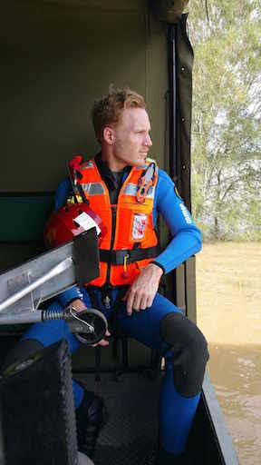

Giving back
For several years I have been involved as a rescue volunteer for the NSW State Emergency Service. The SES is a volunteer organisation tasked with addressing emergencies related to floods and storms, weather events that are increasingly common and disastrous in Australia.
I have enjoyed volunteering as a Flood Rescue Technician, developing my skills in training sessions at Penrith Whitewater Stadium, teaching my colleagues rescue methods, and assisting the public when deployed into flood emergencies.
Volunteering is a great way to contribute to your community, to learn practical and general life skills, and to meet a diverse range of personalities. Check out the website for more details and to find your local SES Unit.

Mountains
The Blue Mountains west of Sydney is home to many extraordinary slot canyons that I have enjoyed exploring over several years. Canyoning is a great recreational activity that combines teamwork, problem solving, and technical ropework, and it is a great way to experience parts of the mountains that are off the beaten track.
Ocean
I spent a lot of time at the beach growing up, and surfing has always been one of my passions. Starting early allowed me to quickly pick up other water sports like kite surfing, hydrofoil surfing, and whitewater kayaking. I enjoy surfing with friends and touring the Australian coast looking for new waves.


Music
I learned to play guitar in high school, studying classical nylon technique for a good while before branching out into electric styles in jazz and rock bands. Guitar has been a great creative outlet for me, and recently I challenged myself to take up the violin, which is much harder but also a great way to develop my general music theory knowledge and to find new music genres.

Art
I am a big fan of modern, contemporary, and abstract art - one of my favourite places in Sydney is the Art Gallery of NSW, and I always keep an eye out for new exhibitions. My own artwork is usually inspired by geometric mathematical patterns, and I have been exploring areas of generative art using programming languages like Python.